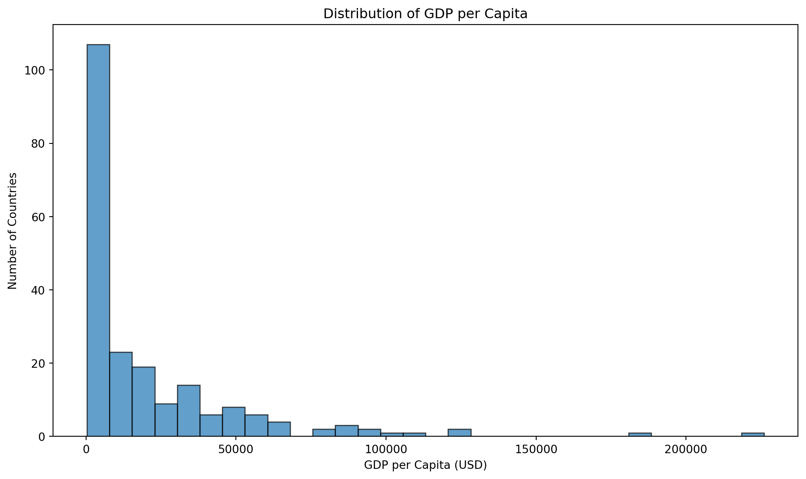
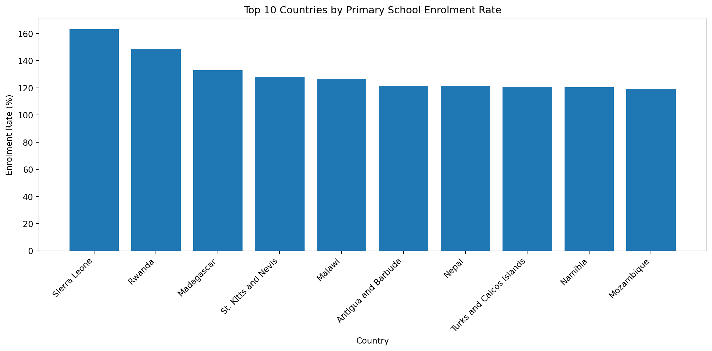
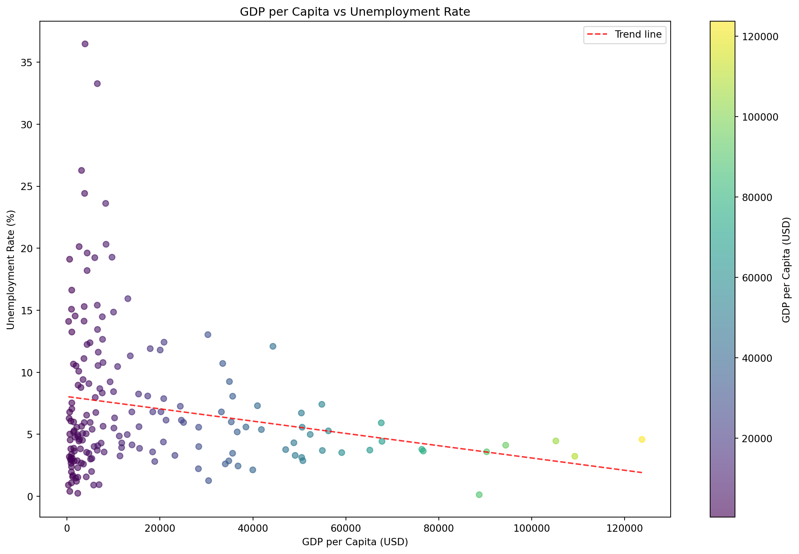
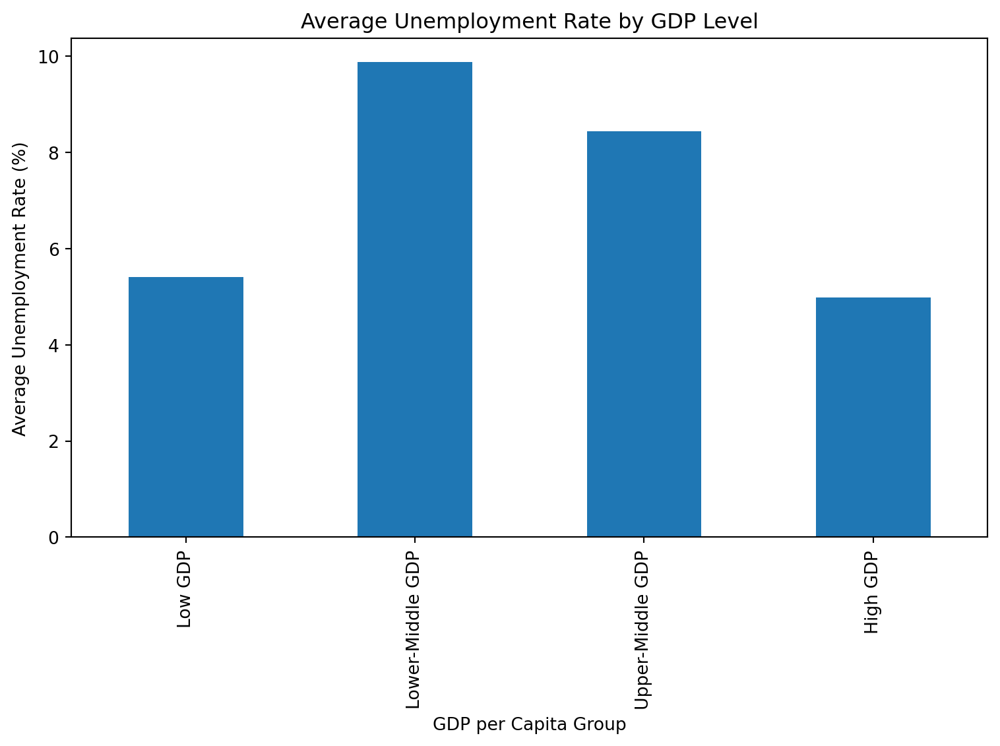
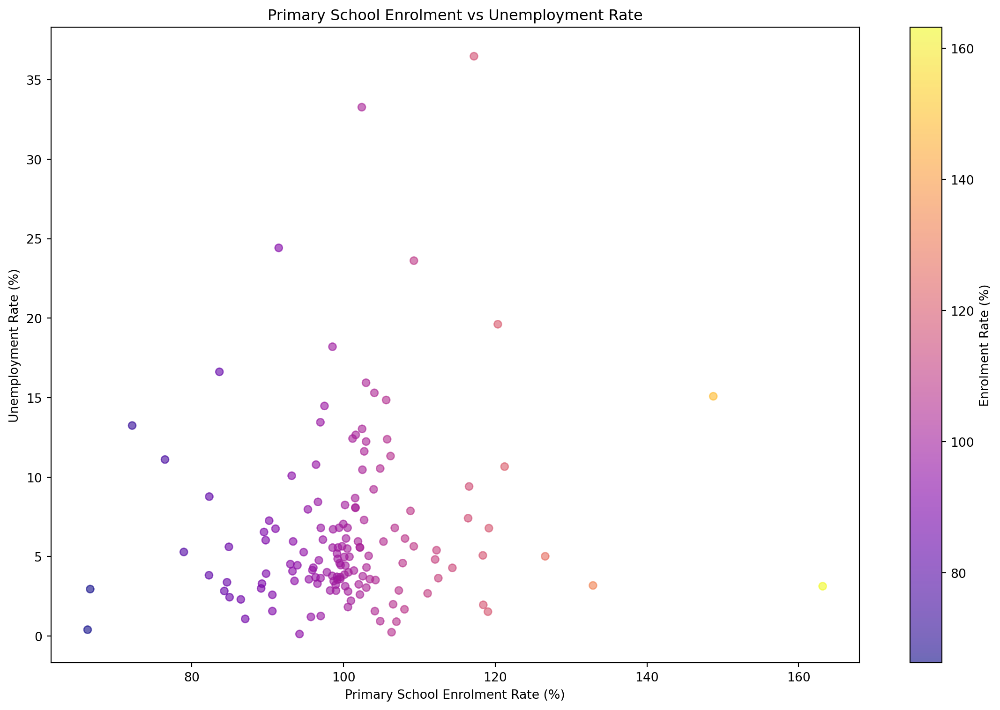

import pandas as pdimport matplotlib.pyplot as pltimport seaborn as snsimport numpy as npdf = pd.read_csv('wdi.csv')print(f"Dataset shape: {df.shape}")print(df.head())
Dataset shape: (217, 14)
country inflation_rate exports_gdp_share gdp_growth_rate \
0 Afghanistan 13.712102 18.380042 -6.240172
1 Albania 6.725203 37.197076 4.826801
2 Algeria 9.265516 30.791556 3.600000
3 American Samoa NaN 46.957520 1.735016
4 Andorra NaN NaN 9.564612
gdp_per_capita adult_literacy_rate primary_school_enrolment_rate \
0 357.261153 NaN NaN
1 7756.961887 NaN 96.371230
2 4960.303343 NaN 105.747154
3 18017.458938 NaN NaN
4 42414.047986 NaN 90.465681
education_expenditure_gdp_share measles_immunisation_rate \
0 NaN 56.0
1 2.729770 86.0
2 4.749247 79.0
3 NaN NaN
4 2.647280 98.0
health_expenditure_gdp_share income_inequality unemployment_rate \
0 23.088169 NaN 14.100
1 7.536462 NaN 10.785
2 3.634643 NaN 12.382
3 NaN NaN NaN
4 7.521358 NaN NaN
life_expectancy total_population
0 65.617 40578842.0
1 78.769 2451636.0
2 76.129 45477389.0
3 72.752 48342.0
4 84.016 79705.0
Introduction
This report analyzes three key indicators from the World Development Indicators dataset for the year 2022 (The World Bank 2023): GDP per capita, primary school enrolment rate, and unemployment rate. These indicators capture important dimensions of economic performance, education access, and labor market conditions across countries.
Extensive cross-country research has emphasized the role of human capital in economic development. Barro (Barro 1991) highlights the importance of education and human capital in explaining differences in economic growth across nations. Similarly, Psacharopoulos and Patrinos (Psacharopoulos and Patrinos 2004) document consistently high returns to education across countries, underscoring its long-term economic significance. At the same time, studies such as Blanchard and Wolfers (Blanchard and Wolfers 2000) examine the macroeconomic and institutional determinants of unemployment, illustrating how labor market outcomes vary across economic contexts.
Motivated by this literature, this report conducts an exploratory data analysis (EDA) to examine how economic output, education access, and unemployment patterns interact across countries in 2022.
Data Overview
The dataset contains various indicators for multiple countries.
Code
# Select the three indicatorsselected_indicators = ['gdp_per_capita', 'primary_school_enrolment_rate', 'unemployment_rate']summary_stats = df[selected_indicators].describe().round(2)summary_stats
Table 1: Summary Statistics for Selected Indicators
gdp_per_capita
primary_school_enrolment_rate
unemployment_rate
count
209.00
162.00
186.00
mean
21142.75
100.72
7.20
std
31040.30
12.16
5.85
min
302.99
66.25
0.13
25%
2899.16
95.75
3.48
50%
7655.59
100.23
5.34
75%
28360.30
104.68
9.19
max
226052.00
163.17
36.47
Conduct EDA on three indicators
Analysis of GDP per Capita
GDP per capita is a measure of a country’s economic output per person. As shown in Figure 1, the distribution of GDP per capita is highly right-skewed, with most countries below $20,000 and a small number of very high-income economies.
Code
fig, ax = plt.subplots(figsize=(10, 6))df_clean = df.dropna(subset=['gdp_per_capita'])ax.hist(df_clean['gdp_per_capita'], bins=30, edgecolor='black', alpha=0.7)ax.set_xlabel('GDP per Capita (USD)')ax.set_ylabel('Number of Countries')ax.set_title('Distribution of GDP per Capita')plt.tight_layout()plt.show()

Figure 1: Distribution of GDP per Capita Across Countries (2022)
Findings: GDP per Capita
The distribution of GDP per capita across countries is highly right-skewed. Most countries cluster at relatively low income levels, while a small number of countries have extremely high GDP per capita values.
This indicates substantial global income inequality. The majority of countries have GDP per capita below $30,000, whereas only a few countries exceed $100,000. The long right tail suggests the presence of outliers — typically high-income economies with strong financial or resource-based sectors.
Overall, the distribution highlights the uneven economic development across countries in 2022.
Analysis of Primary School Enrollment Rate
Primary school enrolment rates indicate access to basic education. As illustrated in Figure 2, the top 10 countries exhibit very high enrolment rates, with some exceeding 100%, which may reflect gross enrolment measures.
Code
# Get top 10 countries by enrolment ratetop_enrolment = df.nlargest(10, 'primary_school_enrolment_rate')[['country', 'primary_school_enrolment_rate']].dropna()fig, ax = plt.subplots(figsize=(12, 6))bars = ax.bar(range(len(top_enrolment)), top_enrolment['primary_school_enrolment_rate'])ax.set_xticks(range(len(top_enrolment)))ax.set_xticklabels(top_enrolment['country'], rotation=45, ha='right')ax.set_xlabel('Country')ax.set_ylabel('Enrolment Rate (%)')ax.set_title('Top 10 Countries by Primary School Enrolment Rate')plt.tight_layout()plt.show()

Figure 2: Top 10 Countries by Primary School Enrolment Rate (2022)
Findings: Primary School Enrolment Rate
The bar chart shows the top 10 countries with the highest primary school enrolment rates. Several countries have enrolment rates exceeding 120%, which may reflect gross enrolment ratios that include over-age or under-age students.
The differences among the top-performing countries are relatively small, suggesting that access to primary education is generally high among these nations. However, focusing only on the top 10 countries does not reflect disparities that may exist in lower-performing regions.
Overall, the results suggest that while many countries have achieved strong primary school access, global education equality may still vary significantly outside the top performers.
Analysis of Unemployment Rate
Unemployment rates vary significantly across countries. Table 2 summarises key statistics, showing substantial dispersion and a moderate average unemployment rate globally.
The unemployment rate has a mean of 7.20% and a median of 5.34%, suggesting slight right-skewness. The wide range (0.13% to 36.47%) indicates significant variation across countries, with a few high-unemployment countries pulling the average upward.
Create at least two different types of plots
Relationship Between GDP per Capita and Unemployment
As shown in Figure 3, there is a slight negative relationship between GDP per capita and unemployment rate, suggesting that wealthier countries tend to have lower unemployment levels.

Figure 3: Relationship Between GDP per Capita and Unemployment Rate (2022). Source: The World Bank (2023).
Findings: GDP per Capita and Unemployment
The scatter plot shows a negative relationship between GDP per capita and unemployment rate. Countries with higher income levels tend to have lower unemployment rates on average. Although there is variation among low-income countries, the overall trend suggests that stronger economic performance is associated with more stable labor markets.
Average Unemployment Rate by GDP Level
Figure 4 compares average unemployment rates across GDP per capita groups.

Figure 4: Average Unemployment Rate by GDP per Capita Group (2022). Source: World Bank WDI 2022. Source: The World Bank (2023).
Findings: Unemployment by GDP Group
The bar chart shows differences in average unemployment across GDP groups. Lower-middle and upper-middle income countries exhibit higher average unemployment compared to high-income countries. This reinforces the negative association between economic development and unemployment observed in the scatter plot.
Relationship Between Education and Unemployment
Figure 5 illustrates the relationship between education and unemployment.

Figure 5: Primary School Enrolment vs Unemployment Rate (2022). Source: The World Bank (2023)
Findings: Education and Unemployment
The relationship between primary school enrolment and unemployment appears weak. Most countries cluster around enrolment rates near 100%, with varying unemployment levels. This suggests that primary education alone may not strongly explain differences in unemployment across countries.
Summary Table of Key Findings
Table 3 presents selected economic and social indicators for major economies, allowing direct comparison across countries.
Code
# Create a summary table for selected countriesselected_countries = ['United States', 'China', 'Japan', 'Germany', 'United Kingdom', 'France', 'India', 'Brazil', 'Canada', 'Australia']summary_data = []for country in selected_countries: country_data = df[df['country'] == country]ifnot country_data.empty: summary_data.append({'Country': country,'GDP per Capita': round(country_data['gdp_per_capita'].values[0], 2),'Primary Enrolment': round(country_data['primary_school_enrolment_rate'].values[0], 2) if pd.notna(country_data['primary_school_enrolment_rate'].values[0]) else'N/A','Unemployment': round(country_data['unemployment_rate'].values[0], 2) if pd.notna(country_data['unemployment_rate'].values[0]) else'N/A' })summary_df = pd.DataFrame(summary_data)summary_df
Table 3: Key Findings Summary
Country
GDP per Capita
Primary Enrolment
Unemployment
0
United States
76657.25
96.97
3.65
1
China
12970.61
100.10
4.98
2
Japan
34065.64
102.16
2.61
3
Germany
50506.52
100.22
3.14
4
United Kingdom
47057.04
102.54
3.77
5
France
40988.64
102.71
7.30
6
India
2347.45
112.07
4.82
7
Brazil
9281.33
103.97
9.23
8
Canada
56256.80
94.74
5.28
9
Australia
65169.52
99.13
3.73
Table 4 synthesises the main analytical insights from the study, highlighting distributional patterns and relationships between economic output, education, and unemployment.
Table 4: Summary of Key Findings from the Analysis (2022). Source: The World Bank (2023).
Indicator
Key Finding
0
GDP per Capita
Highly right-skewed distribution; large income...
1
Primary School Enrolment
Most countries cluster around high enrolment r...
2
Unemployment Rate
Wide variation across countries; mean higher t...
3
GDP vs Unemployment
Negative relationship: higher GDP per capita a...
4
Education vs Unemployment
Weak relationship; enrolment rate does not str...
Task 6 is already done in the report.
References
Barro, Robert J. 1991. “Economic Growth in a Cross Section of Countries.”The Quarterly Journal of Economics 106 (2): 407–43. https://doi.org/10.2307/2937943.
Blanchard, Olivier, and Justin Wolfers. 2000. “The Role of Shocks and Institutions in the Rise of European Unemployment: The Aggregate Evidence.”The Economic Journal 110 (462): 1–33.
Psacharopoulos, George, and Harry Anthony Patrinos. 2004. “Returns to Investment in Education: A Further Update.”Education Economics 12 (2): 111–34. https://doi.org/10.1080/0964529042000239140.